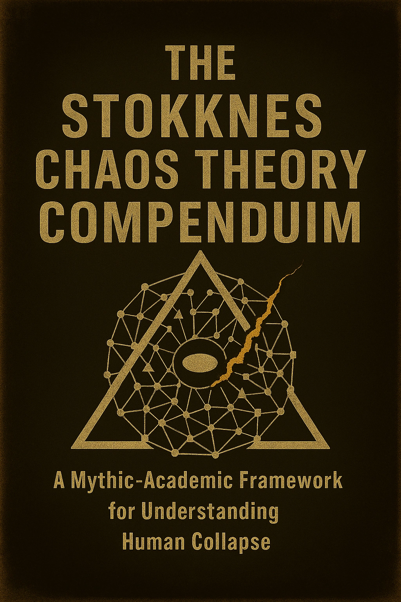

Published English catalogue
Each page now distinguishes Kindle, paperback, hardcover, draft, and missing formats rather than pretending every edition is identical.
Chaos & You
Independent volumes forming a wider architecture of perception, systems, identity, power, meaning, and maintenance.

Civilization, Chaos & You
A social-philosophical examination of roads, borders, bureaucracy, markets, inherited trauma, technological systems, and the frightened animal hiding beneath the infrastructure.

Entropy, Chaos & You
A philosophical examination of entropy, maintenance, decay, exhaustion, time, institutional fragility, and the cost of keeping any structure alive.

Faith, Chaos & You
A confrontation with belief, ritual, doubt, spiritual hunger, technology, metrics, and the strange altars human beings keep building after insisting they no longer worship anything.

Power, Chaos & You
An examination of invisible power, internalized obedience, algorithms, conformity, spectacle, and the structures shaping modern behaviour precisely because they no longer look like control.

Identity, Chaos & You
A psychological and philosophical examination of masks, memory, reinforcement, social performance, neurodivergence, adaptation, and the unstable materials used to assemble the self.

Information, Chaos & You
A study of overload, media saturation, attention erosion, short-form content, selective truth, algorithms, and the collapse of proportion.

Love, Chaos & You
An examination of intimacy, projection, loneliness, comparison, emotional labour, digital performance, and the moment market logic enters the heart.

Philosophy, Chaos & You
A dense philosophical examination of perception, meaning, belief, uncertainty, identity, performance, and the conceptual cages people build so chaos has somewhere to pace.

Time, Chaos & You
A philosophical study of urgency, memory, aging, productivity, rest, deadlines, and the quiet authority of the schedule.

Reality, Chaos & You
An examination of perception, interpretation, biology, trauma, addiction, cognitive limits, material conditions, and the fact that insight does not always create leverage.
Outside the ten-volume line

BUY THIS BOOK.
A philosophical confrontation with consciousness, identity, meaning, and time. Not a guide. Not a promise of transformation.

The Lie That Someone Knows
An anatomy of conspiracy thinking, uncertainty, distrust, and the point where exhaustion begins pretending to be insight.

The Stokknes Chaos Theory Compendium
A mythic-analytical framework connecting cognition, systems, perception, identity, time, power, meaning, and collapse.
Published stories

The Quiet Floor
A near-future Málaga novella about workplace surveillance, biometric performance systems, and the point where control learns to speak in the language of care.

Autonomy Line
Debt, quantified labour, compromised autonomy, and quiet trade-offs hidden inside systems designed to feel convenient.

The Algorithm of Submission
Artificial intelligence, dependency, institutional control, and the point where optimization begins shaping reality more efficiently than the people governing it.
Publicly acknowledged development
Private drafts remain private. These are the two current projects deliberately visible.

Terms and Conditions of Being Alive
A cold Norwegian dystopian novella about consent, memory boundaries, institutional continuity, and a tower-city that works well enough to remain dangerous.

The Violence Was Random
A broken Andalusian mystery about work, pain, migration, friendship, debt, disappearing relationships, and the infrastructure behind ordinary places.
Spanish editions
Six editions currently have at least one live format.